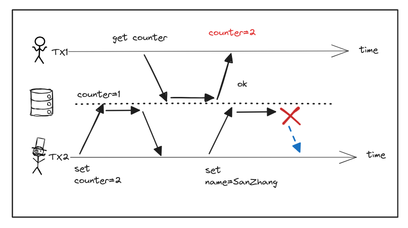
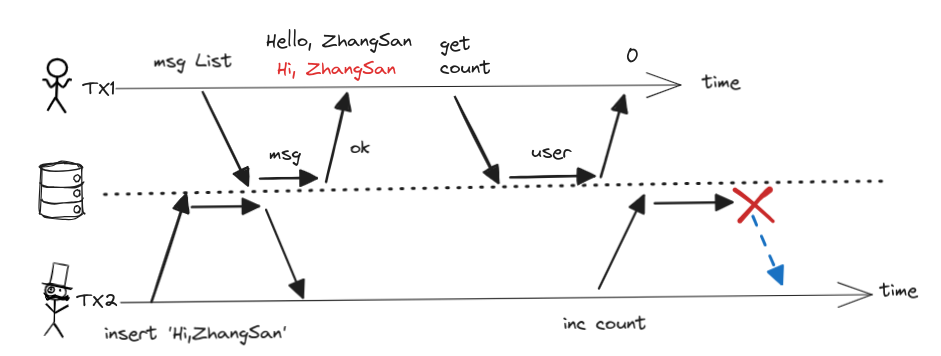

脏读¶
概述¶
脏读（Dirty Read）：一个客户端读取到另一个客户端尚未提交的写入。
读已提交 或更强的隔离级别可以防止脏读。
发生情景¶
单对象脏读¶
当事务读取到了其他事务对当前对象（数据库中的同一行记录）未提交的修改。

如上图所示，TX1 读取到了 TX2 未提交的写入 counter=2，如果 TX2 事务发生异常回滚，问题就发生了，后续 TX1 发现自己读取到的 counter 又变为 1 了。
多对象脏读¶
当一个事务需要对数据库进行多次写入，且涉及多个对象时，当前事务
用单独的字段存储未消息的数量，每当一个新消息写入时，必须也增长未读计数器。
+----+----------+------------------+
| id | name | msg_unread_count |
+----+----------+------------------+
| 1 | ZhangSan | 0 |
| 2 | LiSi | 0 |
+----+----------+------------------+
+----+---------+-----------------+-----------+
| id | user_id | msg | read_flag |
+----+---------+-----------------+-----------+
| 1 | 1 | Hello, ZhangSan | 1 |
| 2 | 2 | Hello, SiLi | 1 |
| 3 | 1 | Hi, ZhangSan | 0 |
+----+---------+-----------------+-----------+

但是如果没有任何隔离措施，上图所示的 User2 就会发生脏读：
邮件列表里显示有未读消息，但计数器显示为零未读消息，因为计数器增长还没有发生。
防止脏读¶
为什么要防止脏读，有几个原因：
如果事务需要更新多个对象，脏读取意味着另一个事务可能会只看到一部分更新。
用户看到新的未读电子邮件，但看不到更新的计数器，这就是电子邮件的脏读。
看到处于部分更新状态的数据库会让用户感到困惑，并可能导致其他事务做出错误的决定。
如果事务中止，则所有写入操作都需要回滚。如果数据库允许脏读，那就意味着一个事务可能会看到稍后需要回滚的数据，即从未实际提交给数据库的数据。想想后果就让人头大。
行锁¶
使用行锁可以防止脏读，但是对性能影响大
多版本¶
大多数数据库使用多版本的方式防止脏读。对于写入的每个对象，数据库都会记住旧的已提交值，和由当前持有写入锁的事务设置的新值。当事务正在进行时，任何其他读取对象的事务都会拿到旧值。只有当新值提交后，事务才会切换到读取新值（实际上就是多版本并发控制 MVVC）。
比如用户 1 设置了 x = 3，但用户 2 的 get x 仍旧返回旧值 2 （当用户 1 尚未提交时）。